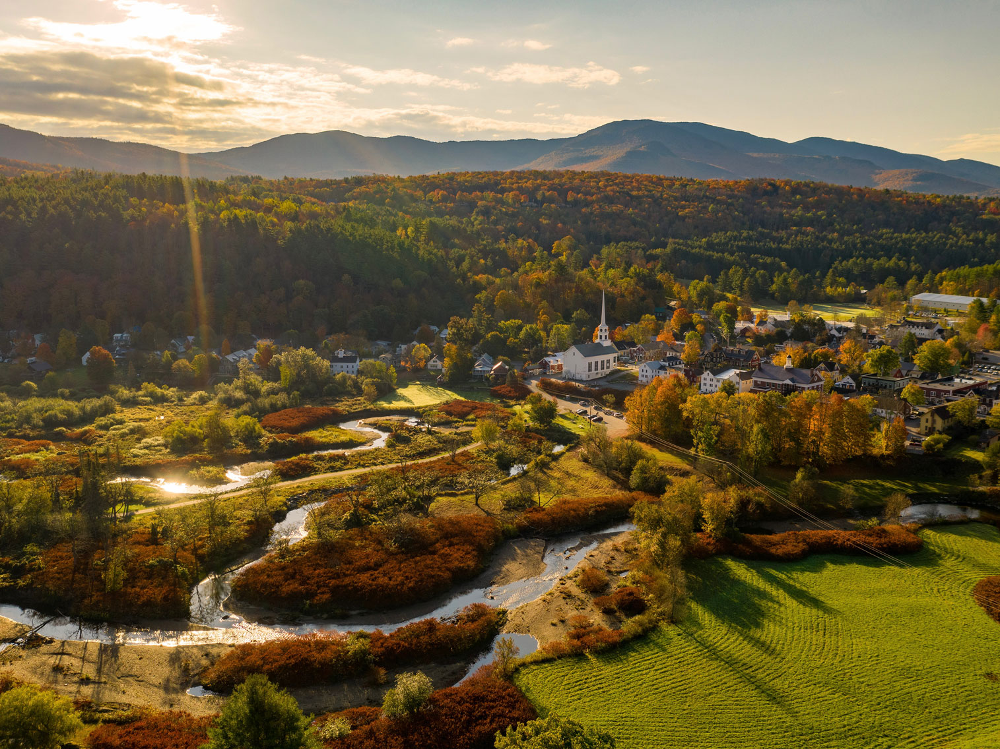
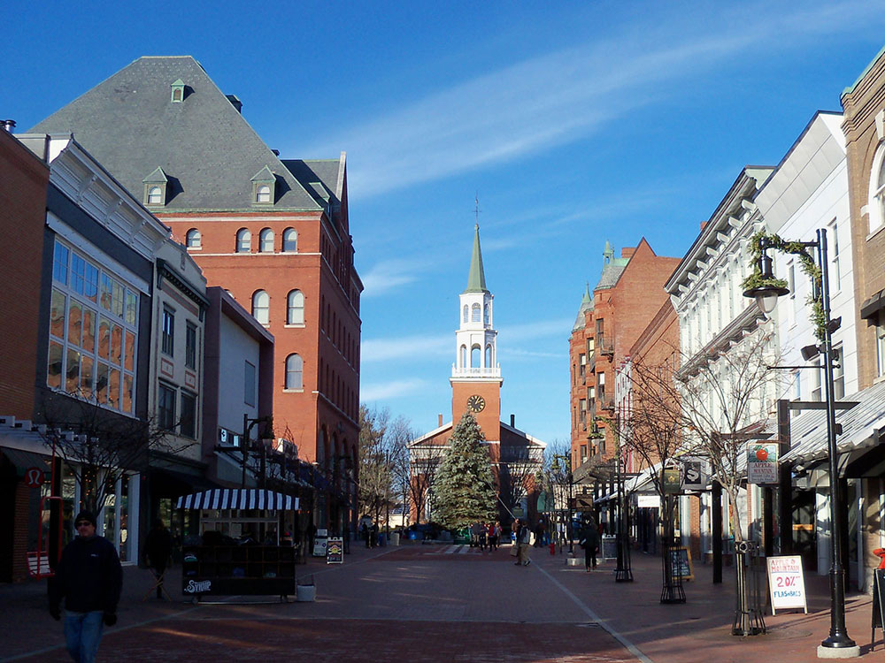
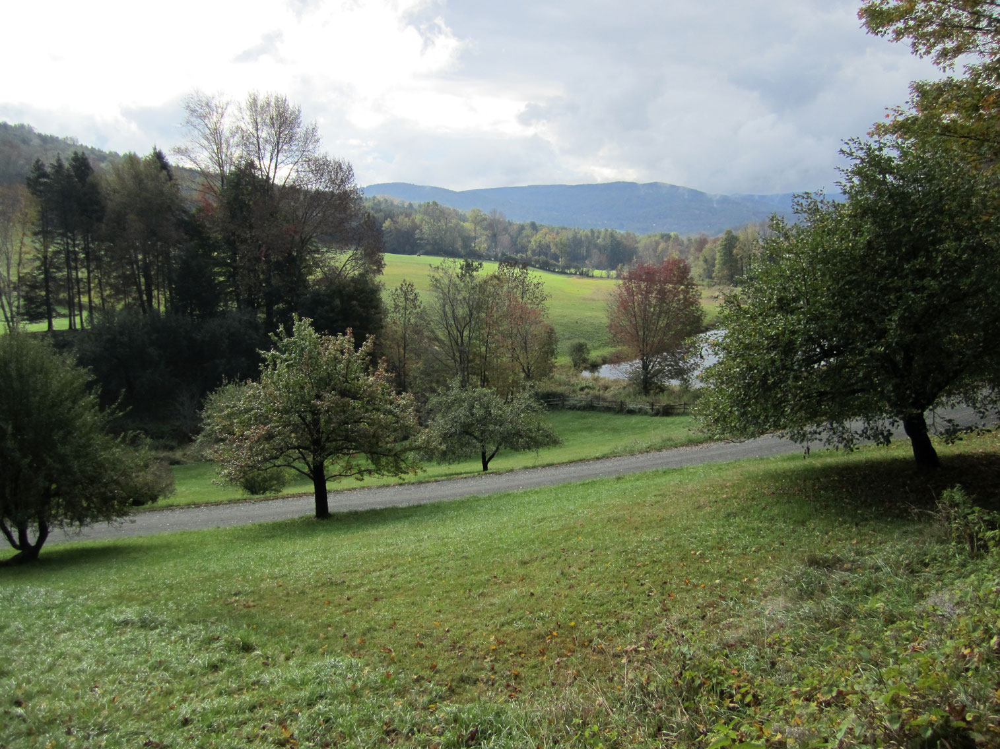
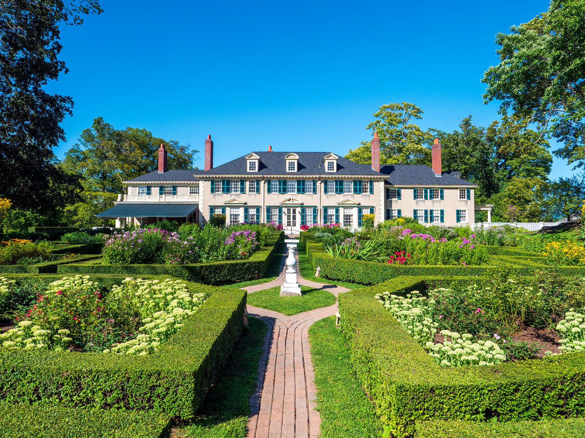

Vermont Travel Guide
Drive scenic byways past covered bridges, sample fresh maple syrup, and ski Vermont's Green Mountains amid charming New England small-town charm.
Places to See in Vermont

Photo by Leonel Heisenberg on Unsplash; Image Size Adjusted
Stowe★
Town nicknamed "The Ski Capital of the East" and is home to Stowe Mountain Resort, a ski facility with terrain on Mount Mansfield and Spruce Peak

AlexiusHoratius, CC BY-SA 3.0, via Wikimedia Commons; Image Size Adjusted

Burlington★
Most populous city in Vermont and ranks as the least-populous city to also be the most-populous city in its state

guyvail, CC BY-SA 3.0, via Wikimedia Commons; Image Size Adjusted
.jpg){kind=link}
Cities

Jonathan Ralton, CC BY-SA 4.0, via Wikimedia Commons; Image Size Adjusted

Overview
Vermont is a New England state of about 650,000 people, one of the least populous states, known for the Green Mountains, small villages, maple syrup, and a strong local-food culture. Montpelier is the capital, Burlington is the largest city, and the name comes from the French vert mont, "green mountain."
Visitors come for the ski resorts around Stowe, the covered bridges and villages such as Woodstock, and the fall foliage. Others tour Ben & Jerry's, maple sugarhouses, and cheese makers, drive Mount Equinox, explore the Northeast Kingdom, and visit Lake Champlain, the Long Trail, and the historic Bennington Battle Monument.
Geography
Vermont is a landlocked state with the Green Mountains running north to south down the center, the Champlain Valley and Lake Champlain on the west, and the Connecticut River on the eastern border. Mount Mansfield, at 4,393 feet (1,339 m), is the highest point. The Northeast Kingdom in the northeast corner is remote and forested, and the Taconic Mountains in the southwest and the Vermont Piedmont in the east round out the landscape.
History
The Abenaki lived in the region when Samuel de Champlain explored the lake that bears his name in 1609. The French built Fort Sainte Anne in 1666, and the English founded Fort Dummer in 1724. Vermont declared itself an independent republic in 1777 and was admitted as the 14th state in 1791, the first to join after the original 13, and it was the first state to abolish adult slavery in its constitution. Ethan Allen and the Green Mountain Boys fought for the state's independence, and farming, marble, slate, and granite shaped its economy.
Stowe
Stowe is a mountain village in northern Vermont, nicknamed the "Ski Capital of the East." Stowe Mountain Resort has skiing on Mount Mansfield, the state's highest peak at 4,395 feet, and Spruce Peak. In summer and fall, visitors hike, bike the recreation path, and drive through Smugglers' Notch, a narrow mountain pass lined with cliffs and boulders. The village has a white-steepled church, inns, farm-to-table restaurants, and nearby Waterbury is home to the Ben & Jerry's factory.
Burlington
Burlington is Vermont's largest city, on the eastern shore of Lake Champlain with views of the Adirondacks across the water. It is a college town, home to the University of Vermont, with a lively food, craft beer, and music scene centered on the pedestrian Church Street Marketplace. The waterfront has a boardwalk, lake beaches, boat cruises, and the Island Line Trail, a bike path that runs out onto the lake, and the Shelburne Museum is a short drive south.
National Protected Areas
Vermont has a small number of national park sites. Marsh-Billings-Rockefeller National Historical Park in Woodstock is the only national park site in Vermont and tells the story of conservation stewardship in America, and the Appalachian National Scenic Trail overlaps with the Long Trail across the state. The Silvio O. Conte National Fish and Wildlife Refuge protects the Connecticut River watershed, and Hildene, Robert Todd Lincoln's home, is nearby.
State Parks and Historic Sites
Vermont's state parks include Underhill State Park, with hiking to the summit of Mount Mansfield, and Crystal Lake State Park, with a swimming beach. Vermont has 55 state parks, including Quechee Gorge, a deep canyon known as the "Little Grand Canyon of Vermont." Quechee Gorge, Lake Champlain Bridge, and the Bennington Battle Monument are major landmarks.
Seasons and When to Visit
Fall is the most popular season, with peak foliage from late September through mid-October, and winter is the main season for skiing and snowboarding at Stowe, Killington, and Sugarbush. Spring is "mud season" and the time for maple sugaring in March and April, and summer is pleasant for hiking, swimming, and farm visits. Mountain weather can change quickly, and some back roads close in the winter and spring.
This article uses material from the Wikipedia article "Vermont", which is released under the Creative Commons Attribution-Share-Alike License 3.0. Additional information was drawn from National Park Service, Vermont State Parks, and Vermont Tourism.